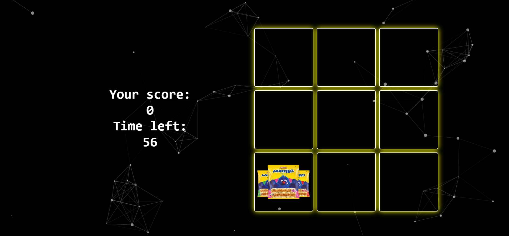

YumYumTrek
YumYumTrek is an engaging game designed to help revitalize Singapore’s mom-and-pop businesses selling local snacks. The game reimagines the classic Whack-a-Mole concept by replacing moles with snacks. Players must "whack" the snacks while avoiding other non-snack items, adding an exciting layer of challenge.
The game features leaderboards where top players can compete for rewards, such as free local snacks. Developed with a responsive design, YumYumTrek provides seamless gameplay across devices, encouraging widespread participation.